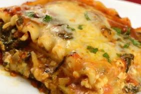

Home
lasagne

Description
To make a delicious lasagne, start by preparing the meat sauce. Sauté onions and garlic in olive oil, then add ground beef or sausage and cook until browned. Stir in tomato sauce, herbs like basil and oregano, and let it simmer for 20-30 minutes. While the sauce is cooking, prepare the ricotta mixture by combining ricotta cheese, an egg, Parmesan, and some seasoning. Preheat your oven to 180°C (350°F) and cook the lasagne noodles according to the package instructions.
n a baking dish, layer the ingredients: start with a layer of meat sauce, then add noodles, followed by the ricotta mixture and shredded mozzarella. Repeat the layers, finishing with sauce and mozzarella on top. Bake the lasagne for 35-40 minutes until it's bubbly and golden. Let it rest for a few minutes before serving. Enjoy your homemade lasagne!
Ingredients
- Lasagne Noodles
- Ground Beef and Sausage
- Onion(Chopped)
- Garlic(minced)
- Tomato Sauce
- Egg
- Ketchup
- Olive oil
- Salt and Pepper
- Oregano Seasoning
Steps
- Sauté chopped onions and garlic in olive oil over medium heat. Add ground beef or sausage and cook until browned. Stir in tomato sauce, basil, oregano, salt, and pepper. Let the sauce simmer for 20-30 minutes.
- In a bowl, mix ricotta cheese with an egg, grated Parmesan, salt, and pepper.
- Cook the lasagne noodles according to the package instructions. Drain and set them aside.
- Set your oven to 180°C (350°F).
- In a baking dish, start with a layer of meat sauce. Add a layer of noodles, then spread the ricotta mixture over the noodles. Sprinkle shredded mozzarella on top. Repeat these layers, ending with a final layer of meat sauce and mozzarella.
- Cover the dish with foil and bake for 30-35 minutes. Remove the foil and bake for an additional 10 minutes to brown the cheese on top.
- Let the lasagne cool for 5-10 minutes before slicing and serving.